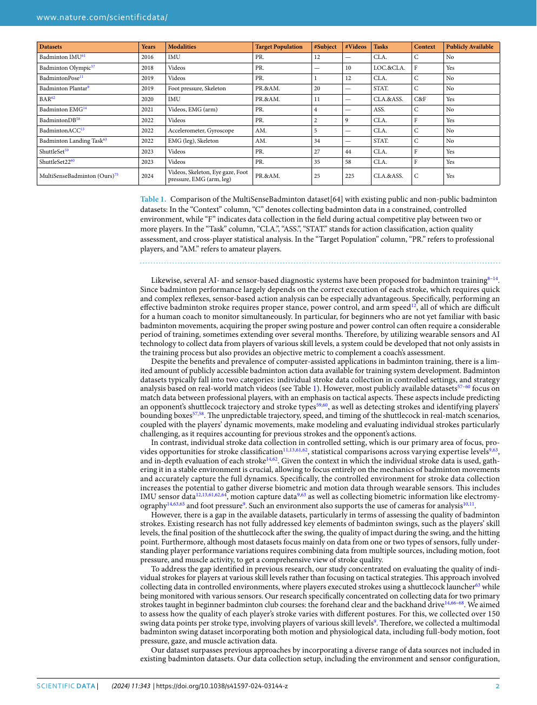
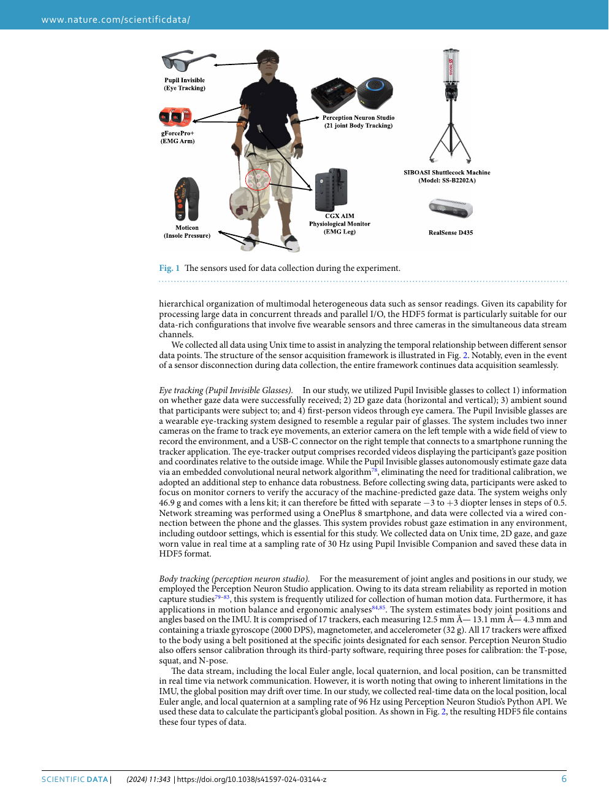
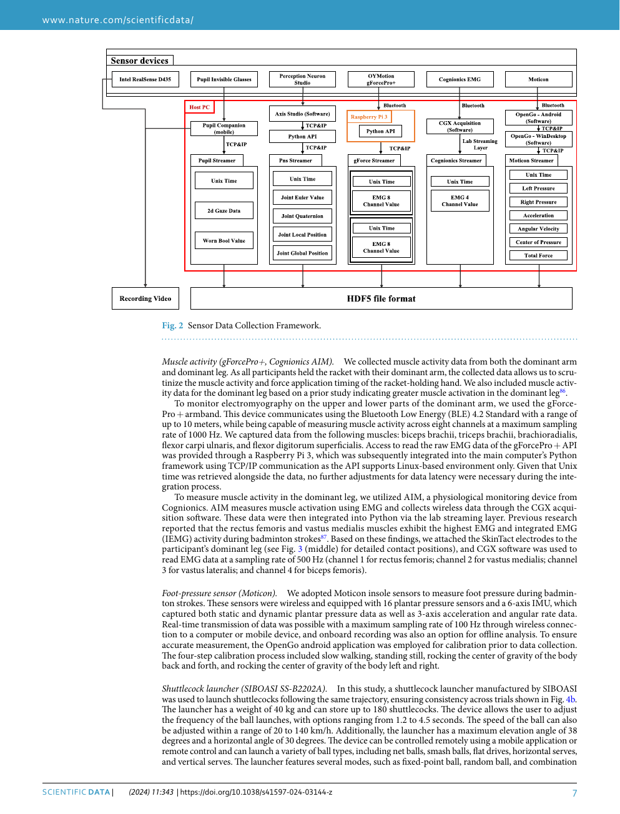
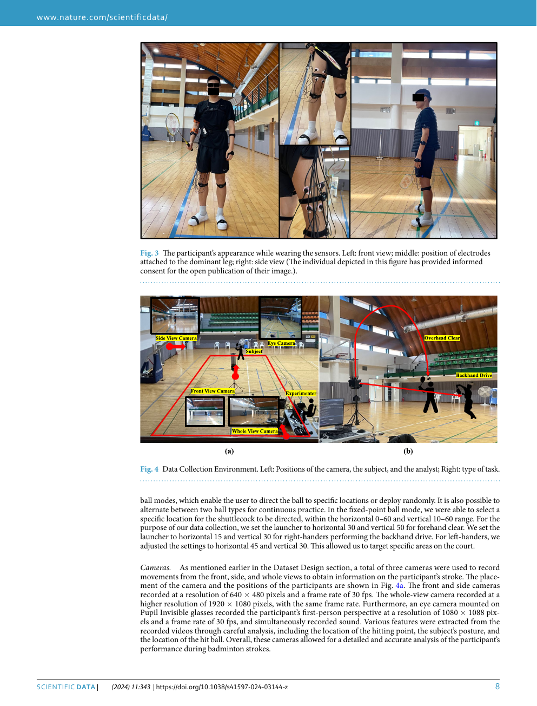

会议 / 期刊：Scientific Data 2024
发表日期：2024-04-04
资料加入日期：2026-05-17
一句话结论
MultiSenseBadminton 给了羽毛球训练反馈一个高质量数据上界：它把 stroke、skill level、落点、击球位置、眼动、身体追踪、肌电、足压和多视角视频同步到同一个数据结构里。
论文定位
这篇论文和 sources/2026-05-16-bst-badminton-stroke-type-transformer 的互补关系很强：BST 证明公开视频 + shuttle + pose 可以做 stroke-type classification；MultiSenseBadminton 说明真正训练反馈还需要多传感器和生物力学证据。
问题定义
羽毛球训练里的 stance、power control、arm speed、footwork、gaze 和 muscle activation 很难靠肉眼同时观察。公开视频适合战术和比赛分析，但对“为什么动作质量差”解释力有限。MultiSenseBadminton 用受控采集和多传感器补上这一层。
数据设计
数据集包括：
- 25 名球员。
- 7,763 个 swing samples。
- 技能水平：beginner、intermediate、expert。
- 动作：forehand clear、backhand drive。
- 传感器：eye tracking、IMU/body tracking、EMG、foot pressure、video。
- 标签：stroke type、skill level、sound、ball landing、hitting location、survey/interview data。
作者通过教练访谈确定数据字段，强调 grip、posture、swing、step、landing point、stroke sound、ball speed、verbal comments 和 demonstration 等训练反馈元素。
方法概述
数据采集使用 shuttlecock launcher 控制来球轨迹，使不同参与者面对相似输入。传感器避免改变球拍重量和手感，使用手部/身体传感作为 racket dynamics proxy。论文还提供 HDF5 数据组织和机器学习验证 pipeline，降低复用门槛。
关键图示

p2 的 Table 1 显示它相对已有羽毛球数据集的差异：受控采集、多传感器、训练反馈和多标签结构。

p6 展示完整传感器配置：眼动眼镜、motion sensors、EMG、足压鞋垫、shuttle launcher 和摄像机。

p7 展示数据流和 HDF5 结构，说明该数据集适合直接训练/验证模型。

p8 展示采集环境、camera / launcher / net / court 布局，方便后续复现实验或设计简化版 demo。
关键发现
- 训练反馈数据应关注动作质量本身，而不只关注比赛战术。
- 同步多模态数据能把“姿势、发力、步法、落点、声音”放进同一个分析框架。
- 受控输入让不同技能水平之间的动作差异更可比较。
- 技术验证覆盖 stroke type、skill level、landing position、hitting point、stroke sound 等任务，说明标签体系可以直接服务监督学习。
局限或疑问
- 采集条件依赖可穿戴和受控场地，和公开视频 demo 的输入形态不同。
- 只覆盖 forehand clear 与 backhand drive，和 ShuttleSet / BST 的多类 stroke taxonomy 需要后续映射。
- 数据集更适合训练反馈和动作质量评估，若用于真实比赛战术理解，需要和 match-level 数据组合。
对当前 wiki 判断的影响
它让 questions/question-badminton-stroke-correction-demo 的路线分成两层：短期用公开视频、shuttle trajectory 和 2D pose 跑通最小闭环；中长期把多传感器数据作为反馈质量上界，逐步加入 skill level、落点、击球声音、足压和肌肉活动等证据。
原始材料
- raw entry：
raw/ingest/2026-05-17-multisensebadminton-biomechanical-dataset/ raw/ingest/2026-05-17-multisensebadminton-biomechanical-dataset/paper.pdfraw/ingest/2026-05-17-multisensebadminton-biomechanical-dataset/paper-text.mdraw/ingest/2026-05-17-multisensebadminton-biomechanical-dataset/analysis.mdraw/ingest/2026-05-17-multisensebadminton-biomechanical-dataset/page-previews/raw/ingest/2026-05-17-multisensebadminton-biomechanical-dataset/abstract.mdraw/ingest/2026-05-17-multisensebadminton-biomechanical-dataset/links.yaml